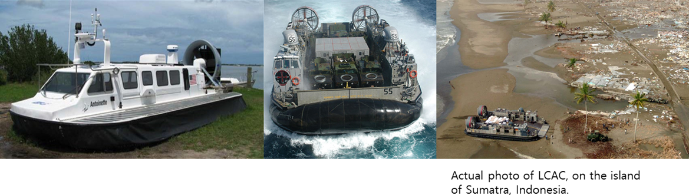

- Air Cushion Vehicle, also known as an hovercraft, is an amphibious craft capable of travelling over land, water, mud, ice and other surfaces with the tactical application in Navy, Army and Coast Guard
- System engineering and customized design available according to the requirement
- High level of expertise in marine systems development and manufacturing capabilities recognized by customers and various industries
- Capability: from 2 to 60 tonnages payload (up to 160 personnel)
